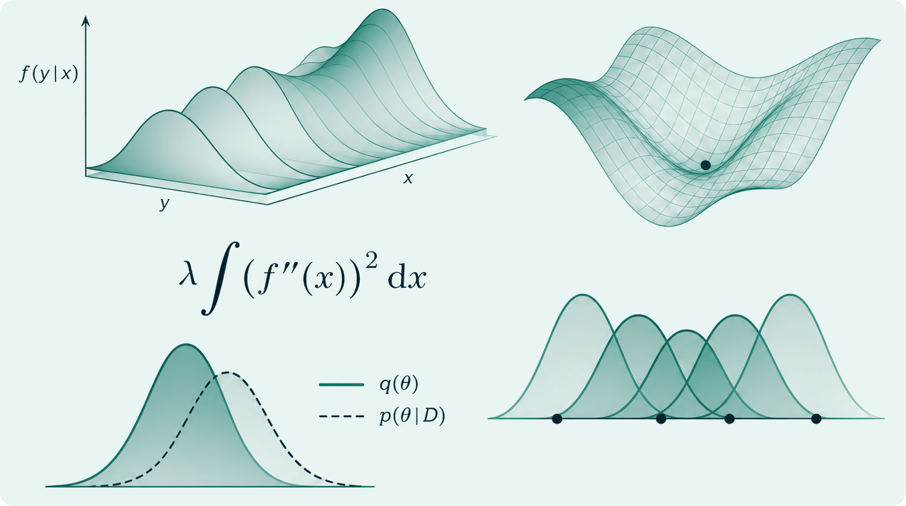
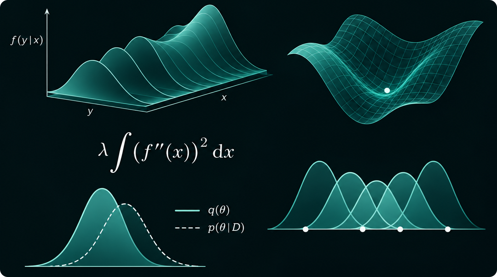

· ICML
Uncertainty in optimal transport
Our ICML paper introduces a variational method for estimating a distribution over transport plans when the matching costs are uncertain.
Welcome to the Säfken Lab, led by Prof. Dr. Benjamin Säfken at the Institute of Mathematics, Clausthal University of Technology.
We develop statistical and machine learning methods for understanding what models learn and quantifying uncertainty. We also teach statistics and data science and provide statistical consulting to TU Clausthal researchers.


· ICML
Our ICML paper introduces a variational method for estimating a distribution over transport plans when the matching costs are uncertain.
· AISTATS
Our AISTATS paper shows how to recover marginal feature effects from a transformer built for tabular data.